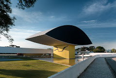

Bem-vindo ao nosso guia online de Curitiba
Exploramos os encantos dessa cidade vibrante e diversificada. De parques exuberantes a arquitetura histórica, passando por uma rica cena cultural e gastronômica, descubra conosco os lugares mais fascinantes que essa cidade única tem a oferecer.
1. Jardim Botânico
O Jardim Botânico de Curitiba é um ícone da cidade, famoso por sua estufa de vidro em estilo art nouveau e seus belos jardins paisagísticos. É um destino imperdível para os amantes da natureza e da arquitetura, oferecendo um refúgio tranquilo no meio da agitação urbana.

2. Museu Oscar Niemeyer
O Museu Oscar Niemeyer, conhecido como "Museu do Olho" devido à sua arquitetura singular, é um ícone de Curitiba. Abrigando uma vasta coleção de arte contemporânea, suas exposições dinâmicas e eventos culturais oferecem uma experiência enriquecedora para visitantes de todas as idades.
3. Centro Histórico
O Centro Histórico de Curitiba é um verdadeiro tesouro cultural, repleto de prédios históricos, igrejas centenárias e praças encantadoras. Passear por suas ruas de paralelepípedos é mergulhar na história e na beleza arquitetônica dessa cidade encantadora.
.jpeg)
4. Praça do Japão
A Praça do Japão é um oásis de tranquilidade e cultura oriental no coração de Curitiba. Com seus jardins meticulosamente cuidados, pontes vermelhas e pagodes elegantes, é um local ideal para relaxar e apreciar a beleza da cultura japonesa.
.jpeg)